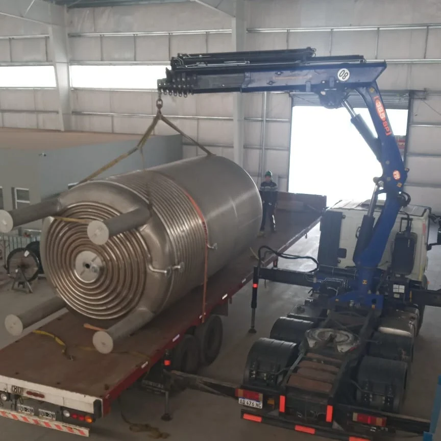
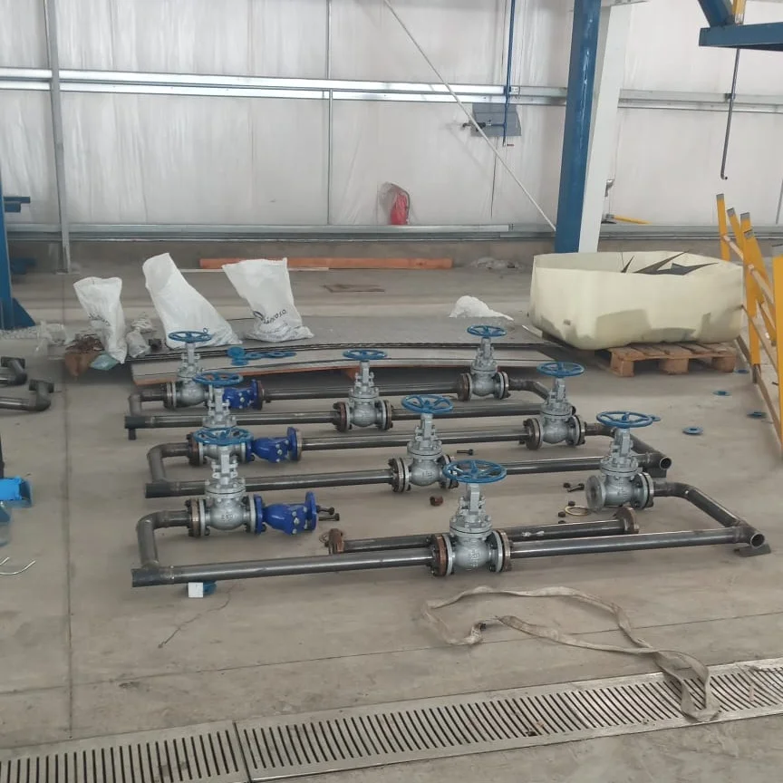

Trabajos realizados
Intervenciones en planta

Montajes y mantenimiento de gran porte en planta

Reacondicionamiento de ventiladores sopladores

Mantenimiento de cañerías de vapor de alta presión

Instalación de equipos de alto vacío

Movimientos de equipos de gran porte

Instalación de transporte a tornillo — Industria Alimenticia